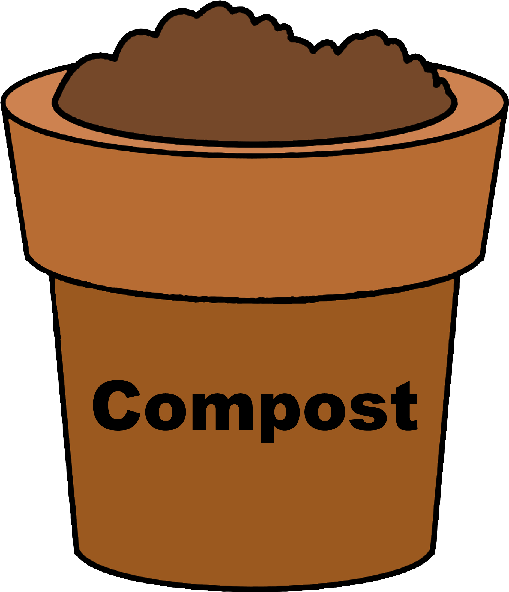

Comprehensive Solid Waste Management Solutions
We provide safe and effective collection, recycling, and disposal of solid waste in your community.
Our Services



- Solid waste collection
- Recycling
- Disposal